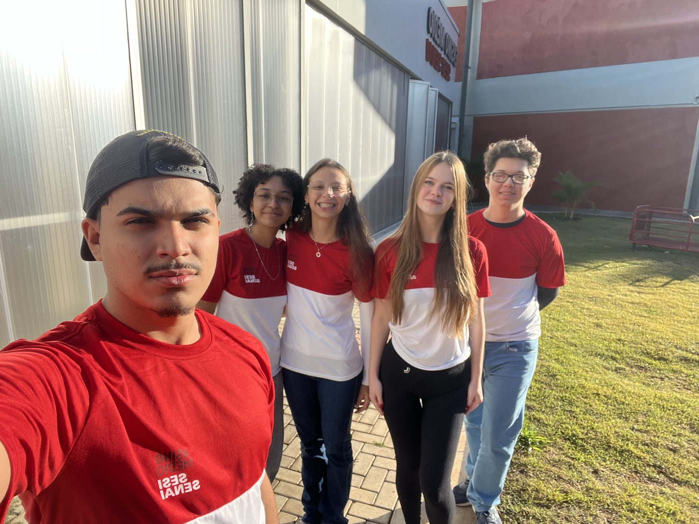
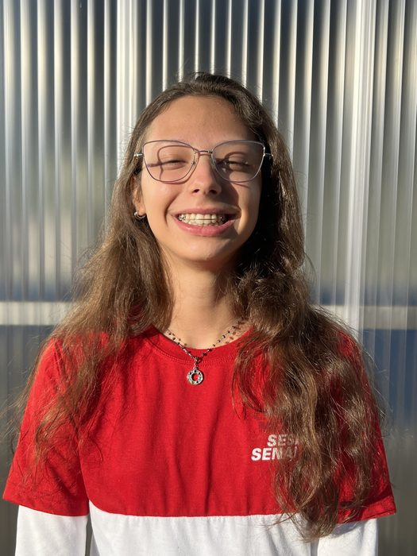
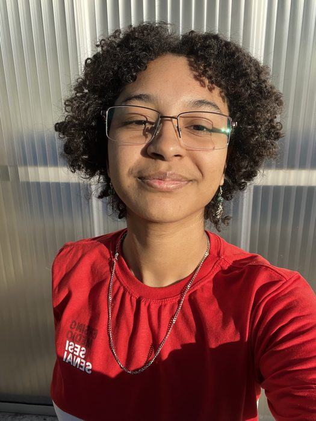
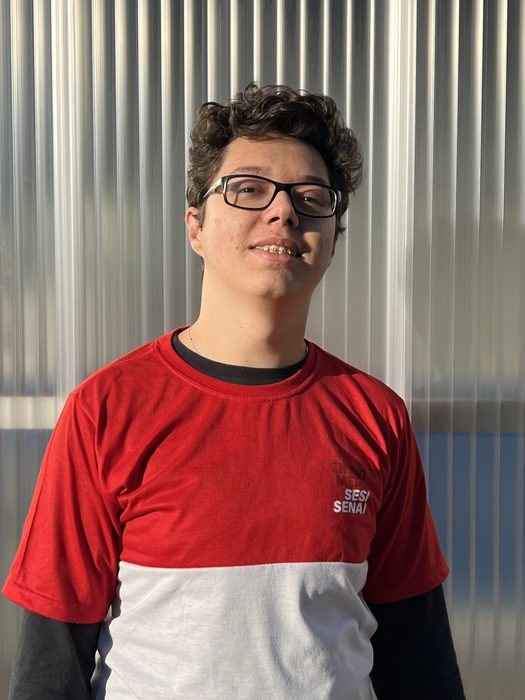
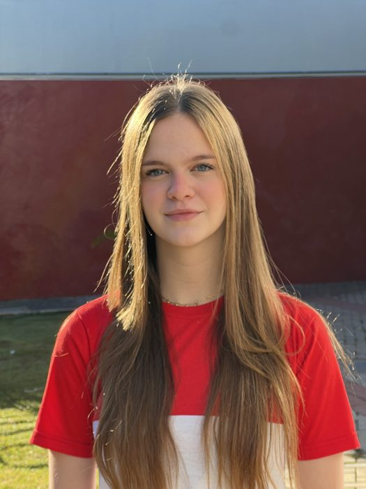

Sistemas que não conversam
Quando cada ferramenta vive isolada, a informação se perde no caminho. Criamos integrações entre plataformas para que os dados circulem sem retrabalho.
A Athenas cria soluções digitais personalizadas, com sistemas, websites e integrações entre plataformas, para que empresas e projetos sociais trabalhem com mais organização, menos tarefas manuais e informação confiável.
A Athenas foi criada pelos autores no curso Técnico em Desenvolvimento de Sistemas do SENAI, em Mococa. Nossa função é desenvolver soluções digitais sob medida e, principalmente, entender o problema antes de escrever a primeira linha de código.
Resolver problemas com inteligência: planejar primeiro, construir depois.
Quando cada ferramenta vive isolada, a informação se perde no caminho. Criamos integrações entre plataformas para que os dados circulem sem retrabalho.
Planilhas soltas e registros duplicados atrapalham decisões. Estruturamos as informações para que sejam fáceis de encontrar, de confiar e de usar.
O que se repete, a tecnologia pode fazer. Automatizamos rotinas para liberar o tempo das pessoas para o que realmente exige atenção.
Atuamos em empresas e em projetos sociais. Em todos os casos, o objetivo é o mesmo: otimizar a gestão, aumentar a produtividade e melhorar o controle das informações.
Aplicações desenhadas a partir da rotina de quem vai usá-las, com banco de dados bem modelado, regras de negócio claras e acesso controlado por perfil.
Sites que funcionam bem no computador e no celular, com a identidade da sua marca e conteúdo organizado para ser entendido rápido.
Conectamos sistemas que já existem, por meio de APIs, para que a informação chegue a quem precisa sem digitação duplicada.
Processos mais rápidos e menos retrabalho no dia a dia.
Partes do negócio falando a mesma língua e compartilhando dados.
Arquiteturas em camadas, prontas para crescer sem recomeçar do zero.
Seguimos princípios da Engenharia de Software e práticas ágeis (Scrum). Cada decisão técnica pode ser rastreada até uma necessidade registrada no início do projeto.
Pesquisa do problema e levantamento de requisitos funcionais e não funcionais.
Casos de uso, modelagem de dados e arquitetura antes de programar.
Desenvolvimento em ciclos curtos, com testes que registram o que funcionou e o que foi corrigido.
Sistemas modulares: correções e melhorias entram sem refazer toda a solução.
O nome vem da deusa grega Athena, símbolo de sabedoria, estratégia e inteligência. Diferente de Ares, deus da guerra bruta, Athena representava a guerra planejada, o que reforça a ideia de resolver problemas com inteligência.
Em grego, o nome da cidade é Ἀθῆναι (Athênai), um substantivo plural. “Athenas” remete à cidade, à deusa e ao trabalho coletivo de cinco pessoas.
O símbolo representa inteligência, estratégia e evolução. As asas remetem a progresso, inovação e direcionamento: crescimento guiado por planejamento.
Nosso slogan resume a proposta: transformar o que aprendemos em soluções tecnológicas eficientes, planejadas e orientadas a resultados.
#F7EFD8#556270#273142A Athenas é a empresa; o Ákron é o produto. Assim como uma empresa de tecnologia pode ter vários produtos, a Athenas poderá ter outros projetos, todos com nomes inspirados na cultura grega.
Sensores IoT medem temperatura, umidade, ruído, qualidade do ar, pressão e radiação UV. Os dados chegam a um servidor, ficam guardados em banco de dados e aparecem em uma plataforma web e em um aplicativo móvel, com alertas quando algum limite é ultrapassado.
Veja quem somos, o desafio que escolhemos enfrentar e como o Ákron funciona, do sensor ao painel e ao aplicativo.
Cada integrante assume uma função de acordo com sua área de atuação, o que organiza o trabalho e garante que planejamento, programação, documentação e gestão avancem juntos.





Sob orientação dos professores Leonardo Oliveira Casellato, Ricardo Akira Harada e Wellinton Cardoso Teodoro · SENAI
Conte para a equipe da Athenas. Ao enviar, o seu aplicativo de e-mail abre com o texto já preenchido.